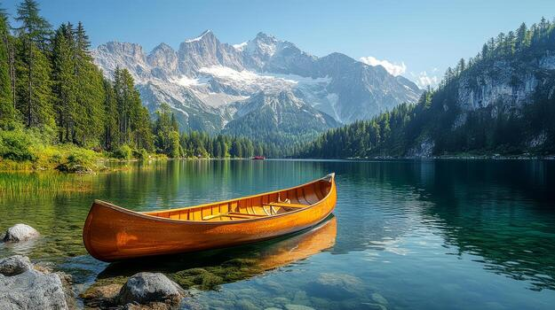
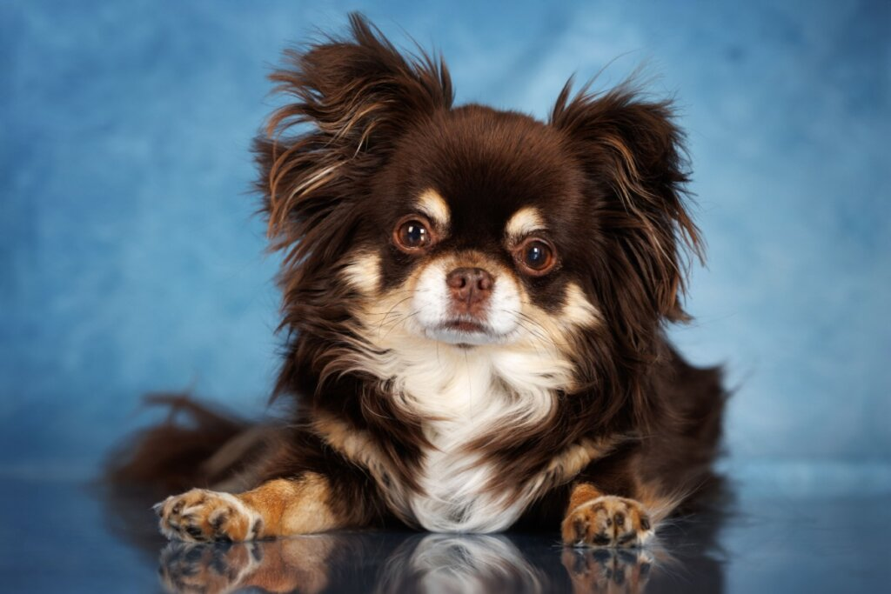
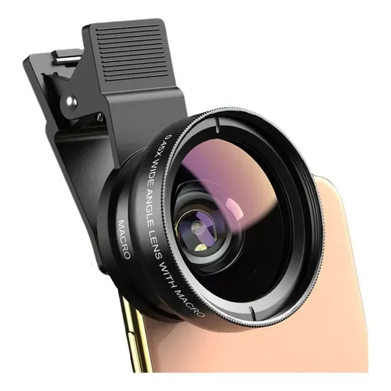

Galeria



Capture cada detalhe, registre cada momento e transforme cada instante em uma história visual única.
Ver câmeras
Câmera macro é usada para fotografar objetos muito próximos, capturando detalhes pequenos com alta nitidez.
SelecionarEste projeto foi desenvolvido para a disciplina de Front-End Design, com o objetivo de criar uma interface moderna e responsiva utilizando HTML e CSS. A proposta é apresentar um site temático sobre câmeras, com navegação simples, layout organizado e uso de Flexbox para estruturação dos elementos, proporcionando uma experiência de usuário clara, intuitiva e visualmente agradável.

